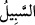

(a.s.)’ın Kantura isimli hanımından olan Medyen b. İbrâhim (a.s.)’ın ismiyle anıla
gelmiştir. Medyen, orada kendi adına bir mesken edinmişti. Sonra burası ona nisbet
edilmiştir. Bu diyar, Firavun’un hâkimiyeti altında değildi. Mısırla arasındaki uzaklık,
Kûfe ile Basra arasında olduğu gibi sekiz günlük yol mesafesidir. Yani, Mûsâ (a.s.)
yönünü Medyen tarafına yöneltince ve o tarafa dönünce; yolu bilmediği için sadece
Allah’a tevekkül ederek ve O’na hüsn-i zan besleyerek kendi kendine:
“Umarım, Rabbim beni doğru yola iletir, dedi.”
Alışıla gelen, yürümek için girilen yola “ denir. Mûsâ (a.s.)’ın önüne üç yol
çıkmıştı; o ortadaki yola girdi. Onu takip edenler de peşinden geliyordu. Aralarında
şöyle dediler: Kaçak kimse, nefsinden korktuğu için ortadaki yola girmez. İki taraftaki
yolun birine sapar. Böylece onlar yandaki iki yola girdiler ve Mûsâ (a.s.)’ı bulamadılar.
Sonra Mûsâ (a.s.) geceli gündüzlü sekiz gün azıksız, yiyeceksiz, yalınayak ve midesi
aç olarak yürüdü. Sekiz gün ağaç yapraklarının dışında bir şey yemedi. Nihâyet
Medyen’e vardı.
Sülemî şöyle der: Mübarek yüzü Medyen’e doğruydu, ancak gönlü Hazret-i Zü’l-
Medyen’e müteveccihti. Medyen çölünün yollarını, Allah’a kavuşma arzu ve iştiyâkıyla
kat’ ediyordu.
Senin gamın bana yâr olalı yokluğa yüz koydum
Böyle bir yol arkadaşı olana âvârelik ne hoştur
Bazıları demiştir ki: Medyen, ezel ve ebed âlemine işâret eder. Mûsâ (a.s.), Medyen
tarafında hakîkat nesimini (hayatını ve ruhunu) buldu. Çünkü orada Şuayb (a.s.) vardı.
Karşılaşmak ve görüşmek (müşâhede ve lika) için o tarafa yöneldi. Nitekim Peygamber
(s.a.) buyurur ki: “Yemen tarafından Rahman’ın nefesini duyuyorum.”[97] O, bu
sözüyle, Üveys Karanî (r.a.)’ın kalb bahçesinden Hak nesîmini duyduğunu haber
veriyordu. Dolayısıyla evliyaullâhın yaşadıkları yerlerde nefhalar vardır, onlarla
karşılaşmalarda bereketler hâsıl olur.
Bazıları demiştir ki: Mûsâ Kelîmullâh’a nübüvvet libası giydirmek, peygamberlik ve
Hak’la konuşma makamına erdirmek murâd edilince, ilk olarak sıkıntı ve belâ
çevgânının kıvrımına koydular ki o yük ve fitneler içinde pişti. Nitekim Allah Teâlâ
şöyle buyurdu: “Seni iyiden iyiye denemeden geçirdik.” (Tâhâ, 20/40). Korkuyla
Mısır’dan çıktı. Allah’a yakardı. Âlemlerin Rabbi olan Allah onun duâsını kabul etti ve
onu düşman korkusundan emin kıldı. Gönlüne sekîne indi ve rahatladı. Gönlüne şöyle
denildi: “Korkma, Hak Teâlâ küçükken Firavun’un odasında onun yüzüne tokat
vurduğunda seni kendi koruması ve himayesine aldı ve düşmana vermedi. Bugün de aynı
şekilde kendi muhâfazası altında tutmaktadır, düşmana vermez.”
Sonra Mûsâ (a.s.) gönlü ilâhî fütûhla dolu olarak çöle yöneldi; kasdı Medyen değildi.